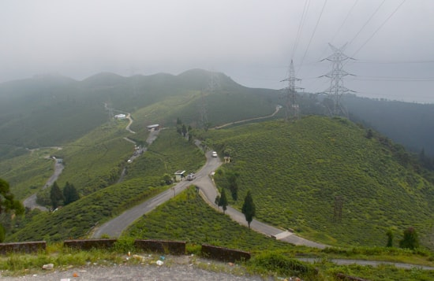
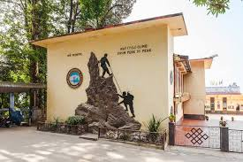
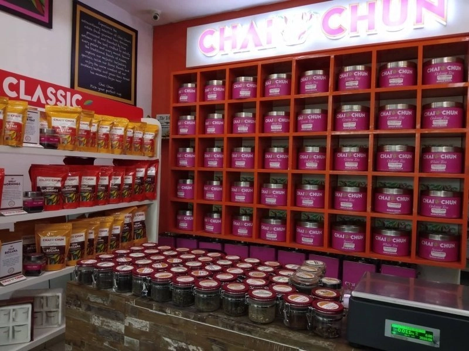

Exploring the Hidden Gems of Darjeeling
Darjeeling, a beautiful town in the Indian state of West Bengal, is famous for its tea plantations and stunning views of the Himalayas.
Beyond the well-known attractions, Darjeeling has several hidden gems that offer unique experiences. Here are some of these lesser-known treasures:
- Tinchuley Village: Peaceful hamlet with panoramic views of Kanchenjunga.
- Lepchajagat: Quaint village with dense forests and stunning sunrise views.
- Sandakphu: Highest peak in West Bengal, offering breathtaking trekking views.
- Batasia Loop: Spiral loop of the toy train with a Gorkha War Memorial and mountain vistas.
- Happy Valley Tea Estate: Historic tea estate with guided tours and tastings.
- Rock Garden and Ganga Maya Park: Terraced gardens, waterfalls, and serene boating.
Things To Do In Darjeeling:
Get the rush at the Himalayan Mountaineering Institute
Kind of a pilgrimage, Himalayan Mountaineering Institute is located in the Jawahar Parvat Darjeeling and provides training and support to those keen on pursuing mountaineering as a sport.
If you are just hobbyist hiker, you can always pay a visit to get more exposure on the sport. If you happen to be a Tenzing Norway fan, it’s a must visit for you.
A Foodie's Guide to Darjeeling: Exploring Local Flavors
Tibetan and Nepali Delights
- Momos: Steamed or fried dumplings with savory fillings.
- Thukpa: Noodle soup with vegetables and meat.
- Gundruk and Sinki: Fermented leafy greens in soups.
Anglo-Indian Treats
- Chicken Roast: Marinated and roasted chicken with gravy.
- English Breakfast: Eggs, sausages, bacon, beans, toast, and tea.
Local Flavors and Street Eats
- Aloo Dum: Spicy potato curry.
- Chowmein: Stir-fried noodles with veggies.
- Darjeeling Tea: World-famous tea experience.
Enjoy the diverse flavors of Darjeeling's culinary scene!